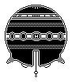

— THIS IS A FOMO EXCLUSION ZONE —
The Void
WE ARE HIRING
Check out our open positions:
- Blind steganographer.
- Bird watcher.
- Ice cream machine (at least 1 week of experience in a similar position is required).
- Happy ghost.
- Plant.
Any thought that I have right now
isn't worth a shit because I'm totally
fucked up.
— Loading Mercury With A Pitchfork, Richard Brautigan
— Places where my heart has been broken —
Weekend schedule
| Saturday | Sunday | |
|---|---|---|
| 10:00 | Breakfast | Sleep |
| 11:00 | Walk in the park | |
| 12:00 | Turn off mirrors | Crying |
| 13:00 | Eating machine | |
| 14:00 | Draw a big circle | Stare at the circle |
| 15:00 | Steal the golden ████ | Hide the robot |
| 16:00 | Impersonate a dead writer | |
| 17:00 | Coffee @ 40.426, -3.706 | Think about sharks |
| 18:00 | Writing time | |
| 19:00 | Call mum | Destroy the sphere |
| 20:00 | PAY FOR SOUP | |
| 21:00 | BUILD A FORT | |
| 22:00 | SET THE FORT ON FIRE | |
| 23:00 | Read about koalas | Turn on mirrors |
| 24:00 | Sleep | Crying |
Jours Étranges
November:
- 23: Free brunch.
- 22:
Tesla· Hematotumblrs with R*. - 20: Chick lit · Quim.
- 18: Risotto 101.
- 17: Ramen O'Clock with HP and I*.
- 16: Relatos Salvajes & Los Porfiados with R*.
- 15: GRAF & 15 years reunion.
- 13: A good coat.
- 12: A Good Coat Is Hard to Find.
- 11: The Bread Nazi · IR*C.
- 10: Drag me to Hell.
- 8: :*
- 7: Dorothy from Kansas.
- 5: WFH · Anorak.
- 2: Whiplash with Damagedgoods.
- 1: Frank.
October:
- 27-31: CartoCamp.
- 26: Laszlo, 美鈴 & Quim.
- 25: Reading @ La Central · My ˜ as seen from the space · Close encounter of the 2nd kind.
- 22: WFH · Positronic answer(s).
- 20: Close encounters of the Nth kind · Henry Pierrot & I*
- 19: MadrEat with R*.
- 18: Lemongrass Chicken.
- 17: Gone Girl with D* & L*.
- 16: Tapas.
- 15: WFH.
- 14: Assessment · Escape plan.
- 13: b∞ring · Meeting my neighbour, Eleanor Abernathy.
- 12: Capture the tilde · Back to MAD · Introductions to watercoloring · A New
HopeBike. - 11: Userland · Stone Junction · Grunt.
- 10: WFH · CyborgCamp · Belmondo.
- 09: Impersonating a painter. · León.
- 08: Bad Maths · Professional steganographer ·
CentroCentro. - 07: Welcome to Spain, Ébola! · Ping pong S01E01 · Scotch and Soda.
- 06: What We See When We See What We See When We Read.
- 05: Toma Café · Alpha Decay -0 · The Knick S01E01 · Brownie @ The Place · MAD-BCN connection with J*. · The Knick S01E02
- 04: ˜tilde —thanks, Paul— Alpha Decay -1 · Kino · Starewitch, Švankmajer y los hermanos Quay · The Social Network · Fudegokochi hapiness.
- 03: Dinner @ Gabriel with A* & D* · Kramer ·
León.
{kind=link}
Library of Uncollected Collections:
- Stone Junction by Jim Dodge.
- Limonov by Emmanuel Carrère.
- What We See When We Read by Peter Mendelsund.
READ THIS WORD
READ THIS WORD THEN READ THIS WORD READ THIS WORD NEXT READ THIS WORD NOW SEE ONE WORD SEE ONE WORD NEXT SEE ONE WORD NOW AND THEN SEE ONE WORD AGAIN LOOK AT THREE WORDS HERE LOOK AT THREE WORDS NOW LOOK AT THREE WORDS NOW TOO TAKE IN FIVE WORDS AGAIN TAKE IN FIVE WORDS SO TAKE IN FIVE WORDS DO IT NOW SEE THESE WORDS AT A GLANCE SEE THESE WORDS AT THIS GLANCE AT THIS GLANCE HOLD THIS LINE IN VIEW HOLD THIS LINE IN ANOTHER VIEW AND IN A THIRD VIEW SPOT SEVEN LINES AT ONCE THEN TWICE THEN THRICE THEN A FOURTH TIME A FIFTH A SIXTH A SEVENTH AN EIGHTH
— Vito Acconci
Contents of this page
- A crypto diary.
- A map of the places where my heart has been broken.
- A homenage to Georges Perec's La Disaparition.
- A battery icon that shows my overall happinness level.
- Several pixel illustrations.
- Several quotes I like.
- Several subliminal messages.
- A chess play between Napoleon & Gen. Bertrand.
- A placeholder for ads about man-eating trees.
- A Nostalgia level widget.
- My weekend schedule.
- A list of the books I'm reading.
- The number of steps I've walked today.
- A list of the things I like.
- Links to articles about steganography and cryptography.
- A random poem generator.
- A .mobi version of this page.
- The song that I'm currently listening.
- A list of the things you can see on this page (i.e., this very list).
I spend a lot of time thinking about
Richard Feynman and Georges Perec. West with the Wind. The Neistat Brothers. Whales and The Royal Tenenbaums. Chashu ramen and Olimpia Zagnoli. 826. Doodling and this American Life and Radiolab and that sound you do with your lips sometimes. Oulipo and Carrot-Orange-Ginger juices. 13 Assassins. Paul Rand and reading in the park (and Junot Díaz). A supposedly fun thing I'll never do again. Sam Vanallemeersch and Calvin and Hobbes. And Ted Chiang's short stories and Michael Caine. Richard Williams, Michael DeForge, feminism, McSweeney's, Puño and Kurt Vonnegut. Jiro Dreams of Sushi, Atlas of Remote Islands and Alexandre Desplat. Spoon, Tom Gauld and Fee Reega (<3) Adventure Time and the School for Poetic Computation. Peter Mendelsund, 'La prose du Transsibérien et de la Petite Jehanne de France' and kissing. Unknown Mortal Orchestra, De Hortus Botanicus and taking pictures (instagram → @javier). Luke Pearson and Paul Erdős and Foxygen and The Eames. Javier Jaén, Hark, a vagrant and NOBROW. Fudegokochis, Sushi and the Little Printer. POSTALCO, Team Society League and books and the future of books (and also more books). Pixel illustration and Kiga Koyata and Jacques Henri Lartigue and Yasutaka Tsutsui. Ryohei Yanagihara, Punch-Drunk Love and the Codex Seraphinianus and There Will Be Blood and Jonathan Glazer movies and long lists of… things.
In March 1959 an unusual group of scientists, government officials, and lesser worthies assembled for a dinner party in the dining hall of the Royal Commonwealth Society, London. Unbeknownst to them, one of the courses was a strange strain of American peanuts: ‘NC 4x', ‘North Carolina 4th generation X-rayed' peanuts, produced from seeds that had been exposed to 18,500 roentgen units of x-rays in order to induce mutations. The irradiated peanuts were unusually large—big as almonds, according to those in attendance, outshowing the British groundnuts served alongside—and had reached the dining table through the generosity of their inventor Walter C. Gregory of North Carolina State College, who sent them as a gift to Mrs. Muriel Howorth, Eastbourne, enthusiast for all things atomic.
Taboo names
There is also a tradition of giving names with unpleasant qualities to children born to a couple whose previous children have died, in the belief that the unpleasant name will mislead evil spirits seeking to steal the child. Muunokhoi 'Vicious Dog' may seem a strange name, but Mongolians have traditionally been given such taboo names to avoid misfortune and confuse evil spirits. Other examples include Nekhii 'Sheepskin', Nergüi 'No Name', Medekhgüi, 'I Don't Know', Khünbish 'Not A Human Being', Khenbish 'Nobody', Ogtbish 'Not At All', Enebish 'Not This One', Terbish 'Not That One'.
Couples whose previous boys have died, would give female names to their son to mislead the evil spirits. Synchronically, taboo meaning may be stronger or obliterated: Nergüi, for example, is very common and does not immediately raise any association, while Khünbish might semantically be perceived as khün bish (cf. the same phenomenon in German with the unremarkable Burkhart (lit. 'castle-strong') versus the unusual Fürchtegott ('fear-God')).
Mongolian name (ht Charlie Loyd)

Based on people you follow
One of the most difficult parts of being a cartoonist is being your own editor, since every line affects every other line on the page. Perhaps the single most difficult part, however, is just starting a page. One trick is to make sure you draw something, even one panel, before going to bed; it will raise your spirits and "carry" you over into the next day's work. Do not wait until you are "in the mood" to draw, or until you "snap out of your funk." You must force yourself to draw even if it feels joyless and pointless. You will feel better the next morning. Feeling follows behavior, not the other way around, as my therapist constantly has to remind me. Finally, both Seth and Chris Ware have told me this, and I have grudgingly come to realize that they are absolutely right: when you sit down to draw, you should "dress for work." Have respect for your craft. Put on a pair of pants.
— Cartooning, Philosophy and Practice, Ivan Brunetti
Aparte de exigirse un alto grado de locura, quedaron fijados los otros dos requisitos indispensables para pertenecer a esa sociedad: junto a que la obra de uno no fuera pesada y cupiera fácilmente en un maletín, la otra condición indispensable sería la de funcionar como una máquina soltera.
Aunque no indispensables, se recomendaba también poseer ciertos rasgos que eran considerados como típicamente shandys: espíritu innovador, sexualidad extrema, ausencia de grandes propósitos, nomadismo infatigable, tensa convivencia con la figura del doble, simpatía por la negritud, cultivar el arte de la insolencia.
— Enrique Vila-Matas, Historia Abreviada De La Literatura Portátil
The slender delicate palpi, with the fury of starved serpents, quivered a moment over her head, then as if instinct with demoniac intelligence fastened upon her in sudden coils round and round her neck and arms; then while her awful screams and yet more awful laughter rose wildly to be instantly strangled down again into a gurgling moan, the tendrils one after another, like great green serpents, with brutal energy and infernal rapidity, rose, retracted themselves, and wrapped her about in fold after fold, ever tightening with cruel swiftness and savage tenacity of anacondas fastening upon their prey.
— Tyson, Peter. "A Forest Full of Frights, part 2". The Wilds of Madagascar. Nova Online.
YOUR AD ABOUT MAN-EATING TREES HERE
Psychogeographical Game Of The Week
Depending on what you are after, choose an area, a more or less populous city, a more or less lively street. Build a house. Furnish it. Make the most of its decoration and surroundings. Choose the season and the time. Gather together the right people, the best records and drinks. Lighting and conversation must of course be appropriate, along with the weather and your memories.
If your calculations are correct, you should find the outcome satisfying. (Please inform the editors of the results.)
— Unattributed, Potlatch Magazine #1, 22 June 1954
Wait, wait, I'm counting the steps.
Always sprinkle pepper in your hair,
Always sprinkle pepper in your hair.
For then if you are kidnapped by a Wild Barbazzoop,
Who sells you to a Ragged Hag
Who wants you for her soup,
She'll pick you up and sniff you,
And then she'll sneeze "Achooo,"
And say, "My tot, you're much too hot,
I fear you'll never do."
And with a shout she'll throw you out,
And you'll run away from there,
And soon you will be safe at home a-sittin' in your chair,
If you always, always, always,
Always, always, always, always,
Always, always sprinkle pepper in your hair.
— Shel Silverstein
VivoExquisit-o-Matic
— by me, circa 2005
This invites
-
https://this.cm/register/chdfc5cgwxm1 - https://this.cm/register/0xvwjumrzrg7
- https://this.cm/register/xqswm0nkgzrc
And there are certain kinds of visual acts which I'm always hoping to stumble upon. Unusual juxtapositions, surprising color combinations, new modes of visual expression…I am always interested by anything graphical that strikes me as (this is difficult to put into words) excitingly wrong. There is a cool-factor to certain images that lie just on this side of disagreeable…pictorial effects that make me think "this will bother a lot of unimaginative people." Whenever I see something like that, a piece of art or graphic design that has that special kind of wrongness about it, I think "I need to do something like this myself." Attendant to this is always the feeling of "in the future, this will be done a lot." In other words, today's ugly is tomorrow's beautiful.
— Peter Mendelsund
Adjust the Nostalgia Level for an optimal experience
Nostalgia Level: 50%
Proceed with caution (like you used to, remember?)
A (SMALL) REMARK IN THE FORM OF A (SMALL) LIST TO THE CURRENT EDITION OF THIS (SMALL) SUMMARY
Dear reader, please note that for the sake of clarity (and also to avoid a lawsuit for copyright infringement in the UK) I have removed the following items from this page:
I. Several diagrams illustrating my proficiency in a) the art of kissing under rainy circumstances and b) having silly bike accidents (not necessarily in a simultaneous fashion)
II. An excruciating account of the multiple times I've gotten lost in the city of Madrid in the last three months (including some beautiful maps pointing to the [possible] locations of the events).
III. A pretty funny story involving: a fake beard, a pigeon, a Lalo Schifrin's record and the Royal Australasian Ornithologists Union (spoiler: the pigeon dies at the end).
IV. A short passage on love, loneliness and fate.
VIII. A brief explanation of my difficulties dealing with the roman numerals.
VI. A serious and straightforward self-description.
— From my OkCupid profile
An Evening In St. Helena (1818)
1. Nf3 Nc6
2. e4 e5
3. d4 Nxd4
4. Nxd4 exd4
5. Bc4 Bc5
6. c3 Qe7
7. O-O Qe5
8. f4 dxc3+
9. Kh1 cxb2
10. Bxf7+ Kd8
11. fxe5 bxa1=Q
12. Bxg8 Be7
13. Qb3 a5
14. Rf8+ Bxf8
15. Bg5+ Be7
16. Bxe7+ Kxe7
17. Qf7+ Kd8
18. Qf8# 1-0
…Then, about five years ago, a friend of mine moved here from Kelowna, British Columbia. She said, You know, in Toronto, friendships are all based around talking. What you do with your friends is you go out for coffee or drinks, or you go to their apartment and you talk about stuff. In Kelowna, what you do with your friends is go swimming. It seemed really beautiful to me that in Kelowna your friends might just be these people who liked floating around in the water with you—that the people floating near you are your friends.
— The Chairs Are Where the People Go, Misha Glouberman & Sheila Heti

Continued on Page A3